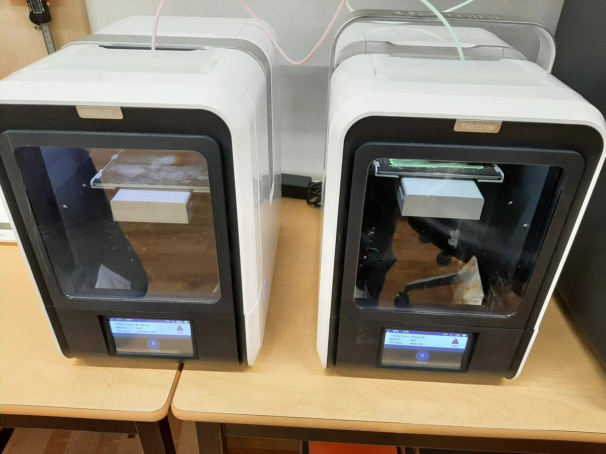
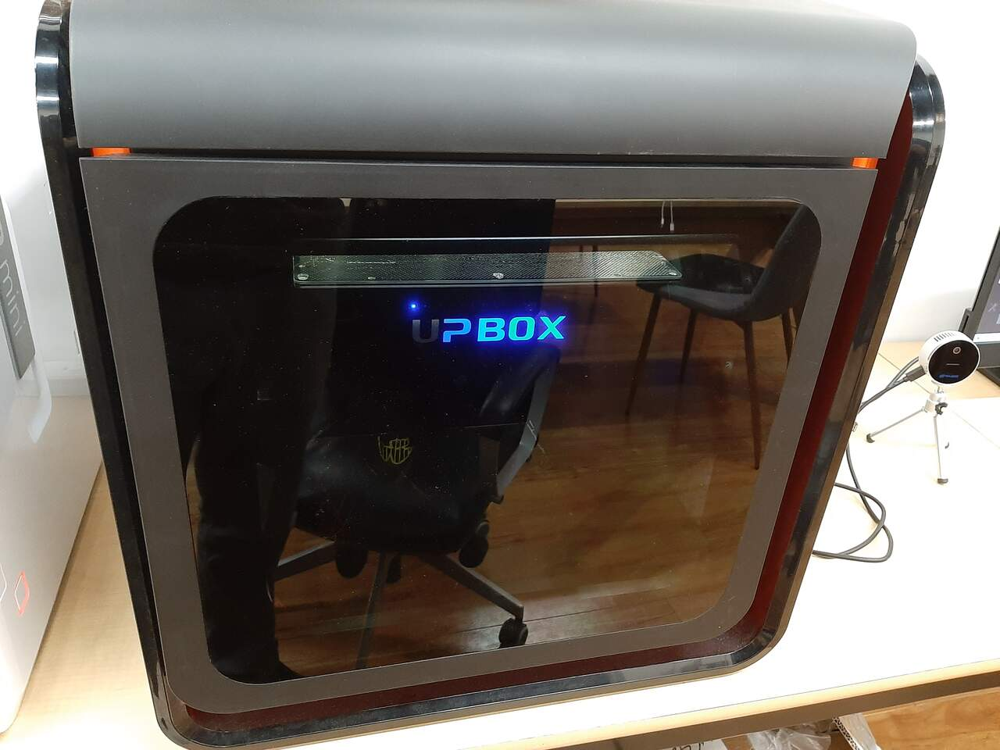
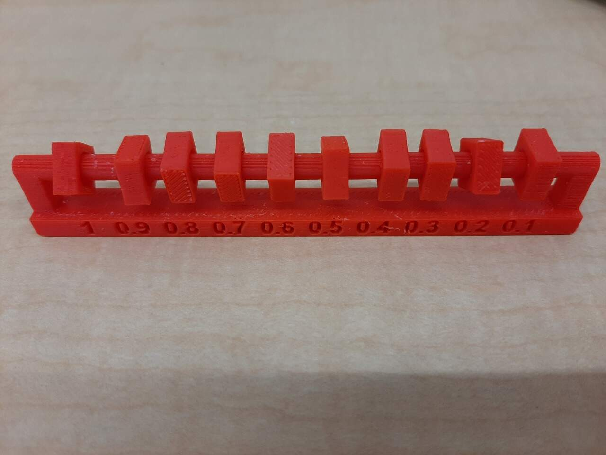
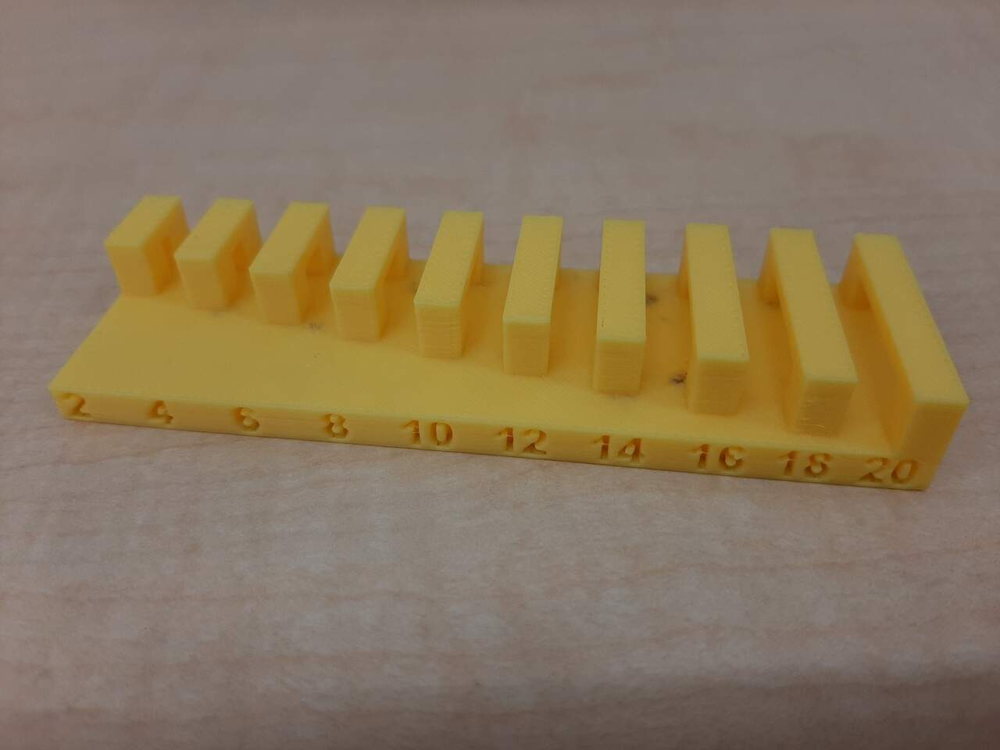
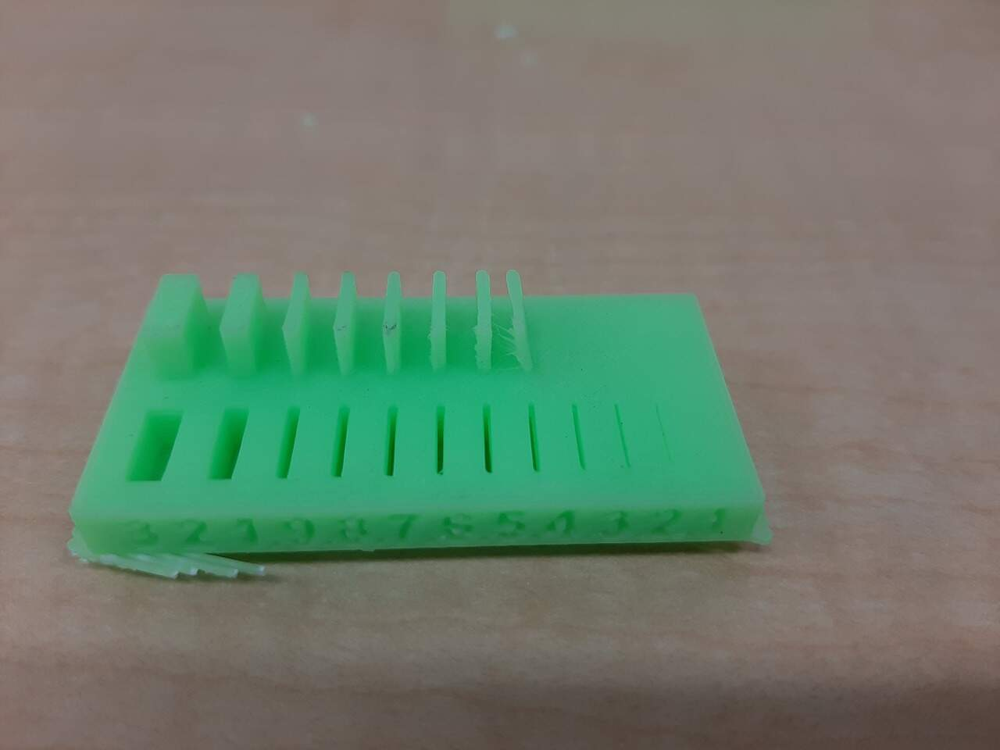
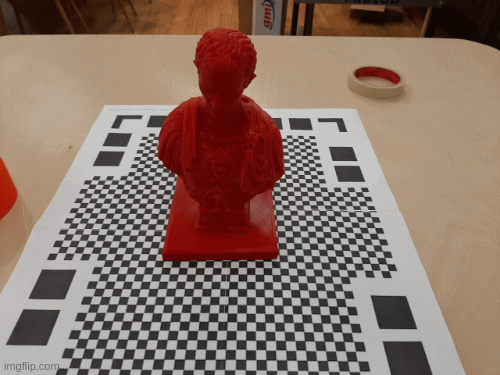
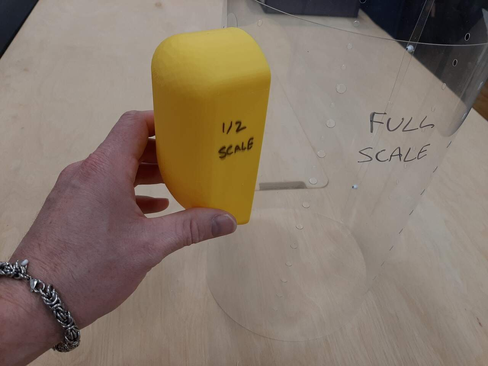

Assignment Overview
The assignment for this week was to learn how to characterise and use 3D printers, learn how to 3D scan an object, and to design a part that can not be easily made subtractively and print it using a 3d printer. As with most weeks, there were group assignments and individual assignments. The details of which are listed below.
Group assignment:
- Test the design rules for your printer(s)
- Document your work and explain what are the limits of your printer(s) (in a group or individually)
Individual assignment:
- Design and 3D print an object (small, few cm3, limited by printer time) that could not be easily made subtractively
- 3D scan an object, try to prepare it for printing (and optionally print it)
Learning outcomes
- Identify the advantages and limitations of 3D printing
- Apply design methods and production processes to show your understanding of 3D printing.
- Demonstrate how scanning technology can be used to digitize object(s)
Have you answered these questions?
- Linked to the group assignment page
- Explained what you learned from testing the 3D printers
- Documented how you designed and made your object and explained why it could not be easily made subtractively
- Documented how you scanned and prepared an object (for 3D printing)
- Included your original design files for 3D printing (both CAD and common format for 3D printing)
- Included your hero shots
In the next section, I will discuss the group assignment and its results.
Group Assignment
For the group assignment we had to test the design rules of our printer, document our work, and explain the limits of our printers. Before diving in to the assignment, i will first begin by discussing the equipment.
The equipment
The FabAcademy node in Vancouver Canada mainly uses two styles of fully enclosed and heated printers: The UP BOX +, and the UP mini 2. Both are designed to print using ABS filament, and although PLA and other filaments can be used, the machines are not optimized for it. Therefore, we print mainly using ABS.
UP mini 2
This printer is designed for smaller prints with a modest build volume of 120 x 120 x 120 mm. Its specifications are given below:
- Printing Technology: MEM (Melted Extrusion Modeling)
- Build Volume: 120 x 120 x 120 mm (4.7″ x 4.7″ x 4.7″)
- Build Chamber: Passively Heated
- Bed Calibration: Automatic Nozzle Height, Software-Assisted
- Air Filtration: HEPA with Activated Carbon
- Print Surface: UP Perf or UP Flex, Heated
- Enclosure: Full
- Optimum Layer Resolution: 150 microns
- Touch Screen: 4″LCD
- Print Resume on Power Interrupt: Yes
- Custom Nozzle and Bed Temperature Control: Yes
- Filament Diameter: 1.75 mm
- Compatible Materials: ABS, ABS+, PLA, PLA Composites, Conductive, Wood, Bronze, Flexible, Nylon, Polycarbonate, Carbon Fiber, PET, ASA and more.
- Filament Spool Compatibility: 500 g
- Connectivity: USB, Wi-Fi
- Software: UP Studio, UP Studio App
- Software Compatibility: Windows 7/8/10, Mac OS X, iOS 8.x/9.x
- Machine Dimensions: 255 × 365 × 285 mm (19.1″ x 20.5″ x 19.5″)
- Machine Weight: 8 kg (20.3 lb)
- Warranty: 1 Year
Further details can be found at the UP mini 2 website.
UP BOX Plus
This printer is designed for medium to larger prints. It is not suitable for very large pieces with a bed volume of 255 x 205 x 205 mm (10" x 8" x 8"). Its specifications are given below:
- Printing Technology: MEM (Melted Extrusion Modeling)
- Build Volume: 25.5 x 20.5 x 20.5 cm (10″ x 8″ x 8″)
- Build Chamber: Passively Heated
- Bed Calibration: Automatic
- Air Filtratio;n: HEPA with Activated Carbon
- Print Surface UP Perf or UP Flex, Heated
- Enclosure: Full
- Optimum Layer Resolution: 100 microns
- Print Resume on Power Interrupt: Yes
- Out of Filament Detection: Yes
- Custom Nozzle and Bed Temperature Control: Yes
- Filament Diameter: 1.75 mm
- Compatible Materials: ABS, ABS+, PLA, PLA Composites, Conductive, Wood, Bronze, Flexible, Nylon, Polycarbonate, Carbon Fiber, PET, ASA and more. Filament Spool Compatibility 500 g and 1000 g
- Connectivity: USB, Wi-Fi
- Software: UP Studio, UP Studio App
- Software Compatibility: Windows 7/8/10, Mac OS X, iOS 8.x/9.x
- Machine Dimensions: 49.3 × 51.7 × 49.3 cm (19.5″ x 20.5″ x 19.5″)
- Machine Weight: 20 kg (44.1 lb)
- Warranty: 1 Year
Further details can be found at the UP BOX Plus website.
Using the equipment
Before beginning the group assignment, it was important that we learned the speifics of each machine. Therefore, our FabAcademy Node coordinator Jason gave a walkthrough in which we learned:
- How to initialize the printers
- How to remove and extrude the filament
- How to calibrate the z-axis
- How to use the software and the ideal settings
- How to initialize a print
We capture all of this information by taking a video of the instructions and then we posted the video to YouTube for future reference for new members to the node in Vancouver. The Youtube video is below:
After we learned how to use the equipment we began the prints for the group assignment.
The prints
To characterize and learn the limitations of our machine, we chose to download and print the files that were provided on the Fab Academy assignment page. We printed all of the tests at once using all three of the printers at our disposal. Although the models are exactly the same (UP BOX Plust and UP Mini 2), the extruder and underlying technology is the same (with the main difference being volume) so we assumed that the results of a test on one machine would yield similar results across the various machines. To perform the prints we downloaded the STL files. The tests that we printed are listed below:
with supports
unsupported
other test
Overhang with supports
For the overhang test, we printed the STL file and included supports to use as a control when comparing against the unsopported prints. Below are pictures of the unssupported prints and a closeup of the overhang results.
Clearance
This piece was also printed with supports. The piece is designed such that rings are printed around a rod with narrower and narrower inner diameters until you get to a clearance that is too small for the printer to hand causing the rings to bind. The results of this test with our printers was very impressive. We were able to liberate **all of the rings except the 0.1 mm clearance. The results are shown in the image below:
As can be seen from the image, all fo the rings were able to twist and break free except for the 0.1 mm ring.
Angled
In this test, we printed a piece that had gradually increasing overhangs to test what angle of departure can be used without supports. The results of the test were that we were able to print to an angle of about 30 degrees before having issues with the print results. The photos below indicate the results of these tests:
As can be seen from the images, there were only issues with the print at the 20 degree level. To be conservative, we will aim to keep unssuported angles to no less than 30 degrees.
Overhang
This test looked at how long of an overhang can be used before the print begins to fail. In this test, overhangs of increasing length are printed and the length at which the print becomes messy is the limit. The results for our printer indicated that the limit is approximately 3 mm of overhang
Bridging
The birdging test evaluates how far your extruder can pul a filament across a gap before drooping or sagging. In this test, the length between two posts is gradually increased. Interestingly, every gap was perfectly bridged indicating that the limit for these printers was outside the bounds of the test pieces. That said, to be conservative, we will remain vigilant to never exceed the maximum bridging length of 20 mm.
Wall thickness
In this test, a piece was printed in which wall thicknesses were increased in an additive manner, and the gap between two walls was also printed. The results of this test showed that a minimum thickness of around 0.8mm is required before the wall will not be able to support itself and begin to deform. The image below illustrates the result.
Dimensions
In this print, the accuracy of the dimensions is tested by comparing the printed dimensions as well against the original mesh file dimensions. This will be limited by the width of the extruded filament and the precision of the motors. The test piece had an outer width of 20 mm and an inner width of 10 mm. As demonstrated in the images below, the printer is fairly accurate with a nominally small margin of error.
As seen in the photos, the results were an outer width of 20.13 mm and an inner width of 9.96 mm. An accuracy of within 100 microns.
Anisotropy
In this test the difference between the accuracy of the printer when it is printing horizontally, vs. when it is printing vertically is characterized. This is done by printing a part that is equal in both the horizontal and vertical directions and comparing the actual print dimensions. The results are illustrated in the photos below:
As can be seen from the photos. The width of the horizontal portion was 2.64 mm and the width of the vertical portion was 2.53 mm. Indicating some minor Anisotropy (again around 100 microns).
Surface finish
The final test print the we included was a test to characterise the surface finish of a round piece. As can be seen from the result in the photos below, the surface finish is okay when not looking very closely, but upon closer inspection it is not the smoothest.
Individual Assignments
There were two individual assignments this week. One was to 3D scan an object and try to reprint it, and the other was to design and print a piece of your choice that could not be manufactured subtractively. For the 3D scan portion of the assignment I selected a pen holder in the shape of Ceasar. This was selected becaue it had suffient detail to really test the accuracy of the methods. For the 3D printing portion of the assignment, I elected to print a piece towards my final project. These two assignments will be discussed below, beginning with the 3D scanning.
3D Scanning
As mentioned above, the object to be scanned was a 3D printed Ceasar pen holder. The GIF below provides a 3D animation of the piece to be scanned.
For this assignment, I attemped to 3D scan using Lidar technology and photogrammetry. I wanted to test both to see which is the better method. I will start with discussing the results of the Lidar scans first.
Scanning using Lidar
The first tool we used was a Nexigo Lidar Scanner (DETAILS HERE). To begin we had to learn how to use the scanner based on a demonstration from Jason. We recorded the video of Jason and posted it in a Youtube video below.
Following the demonstration from Jason, I went to work on trying to scan the piece in question. Throughout the process, we encountered some difficulties moving around the object because of the cord, so we opted to place the piece on a turn table. Other limitations of Lidar are that if you get too close to the object, the object does not appear. Also Lidar cannot scann clear surfaces and has trouble scanning shiny surfaces.
Throughout the process, we also found that it is helpful to have a marker as a reference to assist the software with the scan. Below are some photos of the scanning process.

Following the scans of the Ceasar bust, we decided to test the scanning technology on another object. We chose a drill. We decided to do a second scan because, as you will see, we did not obtain very good results. The videos below demonstrate the results obtained from the Lidar scans.
Lastly. After completing the 3D scans, I opted to 3D print them to see how they compare to the original. The print results from the scan are below. As can be seen, the lidar was not very accurate in duplicating the original piece. I therefore decided that I would also attempt photogrammetry.
Scanning using photogrammetry
The next phase in the 3D scanning assignment was to explore other methods of scannign with the intention of obtaining a more accurate result. I therefore elected to try photogrammetry. To do this I took over 35 photos from all around the bust and loaded them into MeshRoom, an open source photogrammetry software. Again the results were note that great. Below is a short video showing the results from the photogrametry.
As can be seen. My experimentation with 3D scanning was not entirely successful. Several factors may have contributed to the poor result. Some ideas of reasons why it may not have worked are listed below:
- The surface was glossy
- The camera was not of sufficient quality
- The camera was not steady
- Insufficient photos were taken to properly render the object
- The turntable was not effective
There are likely many more reasons why this part of the assignment was not a success. Further work and refinement of this skill will be required in the future.
3D Printing a piece I designed
For this part of the assignment, I elected to model and print the cover for the Thermoelectricgenerator assembly that I will be building for my final project. As a reference, the image below illustrates the cover that will be necessary for my project. The cover is shown in blue.

in the following section I will discuss the modelling of it.
Modeling the piece
The pieve was modeled using Free Cad. The features that were used include:
- A sweeping loft for the profile
- Surfacing to build side walls
- Converting surfaces into a shell to create a body
- Converting shell into a solid
- Cloning the solid and scaling it down
- Using the scaled down and cloned solid to de a subtractive boolean to hollow out the bottom.
to ensure that the piece could not be created subtractively, and only using a 3D-printer I added two lips on the backside such that it would not be possible to get a machine into the top and bottom edges using any kind of 3-axis subtractive machining.
The final modelled piece is shown in the video below:
Printing the pieces
Unfortunately, the full scale piece could not be printed in the 3D printer because it was too big, and the time to print it would have been prohibitive. I therefore elected to print two scaled versions of the piece. Images of the two printed pieces are below:

As you can see from the image, the two bottom walls make it not possible to make this cover subtractively. In theory I could have extended the bottom to make a completely hollow piece, but I wanted to remain as true to the original design as possible.
Dry fitting onto test piece from laser cutting
The last step was to dry-fit the cover to see how it would look with regards to the combustion chamber inner wall that I cut using the laser cutter as a proof of concept for milling sheetmetal later with the CNC. Below is a photo of the “mock-up” prototype with the 1/2 scale TEG cover and the full-scalle combustion chamber wall.
